Week 09 Lecture: Biomolecular Simulation (Part II)¶
An introduction to Markov State Modeling for knowledge-driven analysis of MD data.¶
Things we have learnt so far:
What is MD simulation?
How to run an MD simulation?
How to analyze the MD simulation trajectories?
Motivation of MD simulation:¶
Provides us with both macroscopic and microscopic view of systems of our interest.
Propagation of a large biomolecular system with time in the conformational space. This helps us to interpret the dynamical changes in the system over time.
Comibining of MD trajectories with physics/chemistry based knowledge (thermodynamics and kinetics) can lead to understanding mechanisms (e.g. conformational changes such as folded or unfolded protein, possibility ligand bound or unbound states) which are at times difficult to interpret by laboratory experiments solely.
Some examples of what can we do with MD:¶
Removal of a bound ligand from a protein structure, followed by MD simulation to study the effect of presence/absence of the ligand in protein functionality (Dror et al., 2013; Wacker et al., 2017).
Replace a ligand by a different one, or adding a ligand in an experimentally obtained crystal structure to study the stability and conformation (McCorvy et al., 2018; Provasi et al., 2011).
Mutate one or more amino acids in a protein to explain the stability vs functionality of a mutation (Cordero-Morales et al., 2007).
Change the protonation state of an acidic or basic amino acid (Liu et al., 2015) to enhance the ligand binding.
Apply external forces to simulated atoms to capture the effect of transmembrane voltage or of mechanical strain (Delemotte et al., 2011).
Drawbacks of standard MD simulation:¶
Timescale problem:
Bio-chemical processes that have timescales in the order of milisecond or more.
To sample such events with statistical relevance, we need to run simulations that would require massive (at times prohivitive) computational time.
With 2 fs timestep, we would need 500000000000 MD steps to run a milisecond long simulation. This will take days, if not weeks even in a MSU HPC facility for a standard solvated protein system.
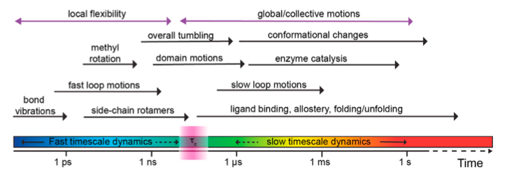
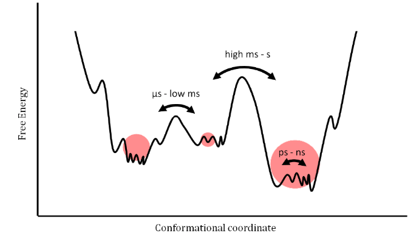
Figure taken from: https://doi.org/10.1016/j.xpro.2021.100919 and doi:10.3390/e14030581
Dimensionality problem:
The dimensionaility of the phase space of a biomolecular is excessively high even if we remove the solvent degrees of freedom.
For example, for a 25000 atom protein, we have 150,000 degrees of freedom in phase space. 75000 each for cartesian coordinates and velocities.
Hence, extracting/identifying relevent degrees of freedom or important features from MD trajectory become cumbersome most of the time.
Markov State Models (MSM) : A method to explore the unexplorables!¶
Protein (un)folding?
Ligand (un)binding?
What is MSM?¶
A method to extract stochastic kinetic information from multiple simulations that are shorter than the timescales of interest, to build a discrete state based stochastic model capable of describing long-time statistical dynamics of the system.
– “Markov state models of biomolecular conformational dynamics” by John D Chodera and Frank Noe ́.
Does that mean we can study protein folding or ligand binding with 1000 simulations of 1000 ns in length?
YES but under some certain conditions!
Voelz and co-workers built a 2000-macrostate MSM to describe the folding of ACB protein from its unfolded state (takes around 30 miliseconds) with smaller prallel simulations. The 15 highest flux folding pathways are shown and experimentally reported native folded and near folded structures are circled.
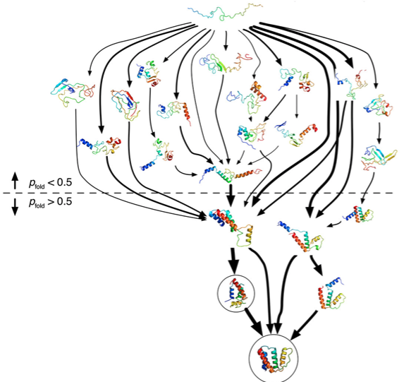
MSMs describe the stochastic dynamics of a biomolecular system using a two-step workflow:
Discretization of the high-dimensional molecular state space, usually into n disjoint conformational sets S1,S2 …, Sn.
In simple words clustering all the MD configurations based on some intuitive knowledge!
Clustering is a unsupervised learning method that labels each datapoint of the dataset.
This labeling is completely dependent upon the representation of the data i.e. the features that are being provided to the algorithm.
We will discuss about features and the importance of selecting relevant features in details later.
Model the stochastic transitions between these discrete and disjoint states, usually described by a matrix of conditional transition probabilities estimated from the simulation trajectories x\(_t\), and termed as the transition probability matrix T(\(\tau\)) \(\equiv\) (p\(_{ij}\)):(p\(_{ij}(\tau\))) = Prob(x\(_{t+\tau}\) \(\in\) S\(_j\) | x\(_{t}\) \(\in\) S\(_i\)).
T is an n \(\times\) n square matrix, where n=number of disjoint states.
Here, \(\tau\) is the lag time or observation interval for which the T is constructed, i and j are the indices of two disjoint states. The lag-time is an important parameter in determining the approximation quality and utility of the MSM. Larger lag-times will lead to better accuracy (markovian character increases) but coarser temporal resolution (less sampling accross total time).
Theoretically for an exact Markov state model, the lag-time should be such that the memory of the previous state will have no effect in the transition from current state to next state. This is the reason why we can stitch multiple small simulations together to study a large time-scale property.
Suppose we have 10 separate small simulation trajectories and have stored 100 snapshots from each one at identical lag-times. Now, consider the following set of relations between the trajectories, snapshots and the cluster labels after discretization:
i. Trajectory 1, Snapshot 1: Cluster 1
ii. Trajectory 1, Snapshot 2: Cluster 2
iii. Trajectory 10, Snapshot 70: Cluster 2
iv. Trajectory 10, Snapshot 71: Cluster 1
Now, the L.H.S has no consequence in the building of MSM. The only identity of the system is inherited into its states. Since all snapshots in all the trajectories are memoryless (markovian), it does not matter which snapshot or which trajectory gives us a transition.
What matters is the states that are involved into the transition.
So, instead of running a single stochastic trajectory of 500000000 steps to capture a long timescale phenomena, we can easily build an MSM with 5000 stochastic simulations with 100000 steps.
MSM practical workflow is simple:
Define states from MD simulation trajectories (configuration space) by clustering using ‘relevent’ features.
Compute the rate of transitions between those states.
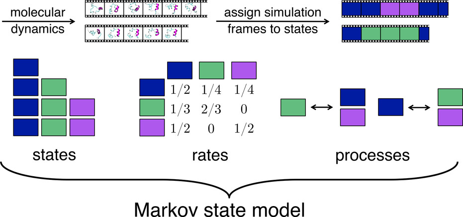
Some properties of MSMs:¶
Suppose that p(t) \(\in\) R\(^n\) is a column vector whose elements denote the probability, or population, at time t. After a lag-time \(\tau\),the probabilities will have changed according to the equation:
p\(^T\)(t+\(\tau\)) = p(t)\(^{T}\)T(\(\tau\))
where, T(\(\tau\)) is the transition probability matrix.
Suppose, \(\Pi\) defines the population of a stationary state: hence, \(\Pi\)(t+\(\tau\)) = \(\Pi(t)\) = \(\Pi\).
\(\Pi\)\(^T\)(t+\(\tau\)) = \(\Pi\)\(^{T}\)(t)T(\(\tau\))
\(\Pi\) = \(\Pi\)T(\(\tau\))
So, the stationary state will always have eigenvalue equals to one with respect to transtion matrix.
Some properties of MSMs:¶
Suppose the following matrix is a 3 state transition probability matrix:

Each row of this matrix is a distribution that represents the probability of transitioning from the row-indexed state to the column-indexed state, where the diagonal entry represents the probability of staying in the same state.
State populations and consequently probabilities can be obtained from counting the number of entries in each state from the MSM.
The state populations can be converted to free energies using the equation: \(\Delta\)G = -RTln(\(p_i/p_j\)) where \(\Delta\)G is the difference between free energy if i\(^{th}\) state and j\(^{th}\) state.
The transition matrix can provide valuable thermodynamic and kinetic information about the system through its eigen-value decomposition.
The eigenvectors corresponding to each eigenvalue have n elements corresponding to each of the n states. The magnitudes and signs of these elements explain which states are contributing to the process identified by the eigenvalue.
The highest eigenvalue is 1, and its corresponding eigenfunction represents the equilibrium stationary distribution.
The higher the eigenvalue is, slower the process involving the corresponding eigen vector is. The eigenvectors corresponding to each eigenvalue have n elements corresponding to each of the n states. The magnitudes and signs of these elements explain which states are contributing to the process identified by the eigenvalue.
Pictorial illustration of MSM:¶
Prinz et al. (J. Chem. Phys. 134, 174105, 2011) defined a potential energy function with four metastable basins. The PE and corresponding stationary state density:
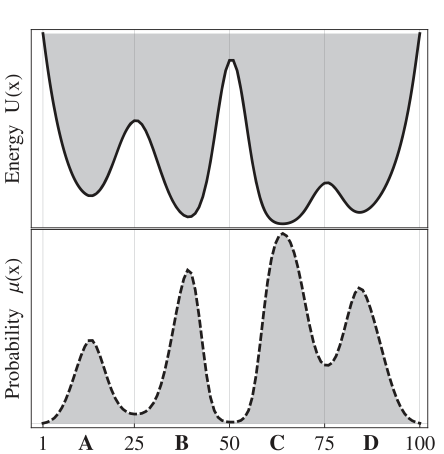
The following plot shows transition density between the states. Note that, transition density is large within blocks allowing rapid transitions within metastable basins, and small or nearly zero for jumps between different metastable basins.
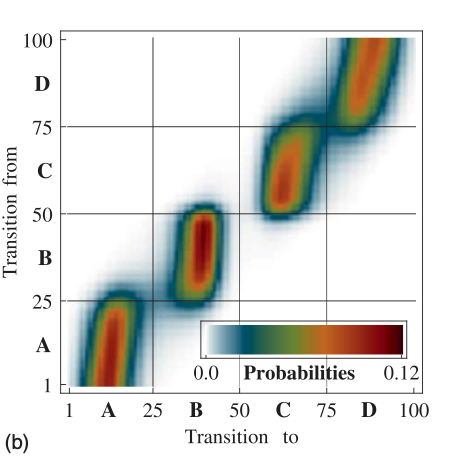
The four dominant eigenfunctions of the transition matrix operator, which indicate the associated dynamical processes in the system.
The first eigenfunction is associated with the stationary process.
The second to a transition between (A + B) -\(>\) (C + D).
The third and fourth eigenfunction to transitions between A -\(>\) B and C -\(>\) D, respectively.
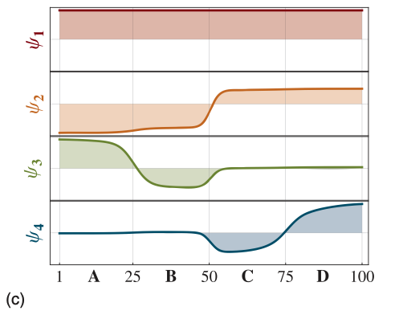
Eigenvalues of the transition matrix, the gap between the four metastable processes and the fast processes is clearly visible. 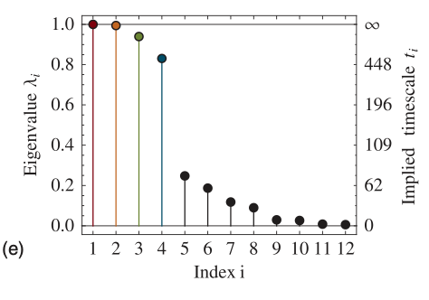
Features¶
Features are a set descriptors which represents the system and the properties under investigation.
Lets consider a single water molecule. The features to describe this molecule can be:
The atom-types and cartesian coordinates.
Charge, sigma, epsilon and internal coordinates (r and \(\theta\)).
Now consider we have 1000 separate water dimers (from a large set of water molecules in a simulation trajectory. We want to classify them according to the strength of the non-bonded interactions (electrostatics and LJ term from FF) without calculating the interaction energies.
How can we represent the dimers to achieve the goal?
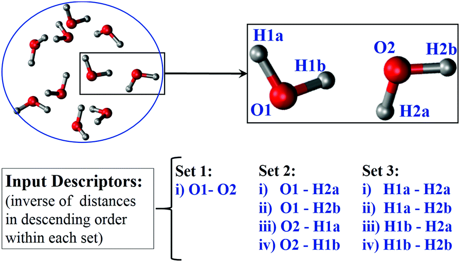
Is it possible to approximately describe a biomolecular system with more than 10000s of degrees of freedom by a few features?
YES, it is.
Let us revisit vector space, linear algebra and think about an example where we have a point in 3-D space.
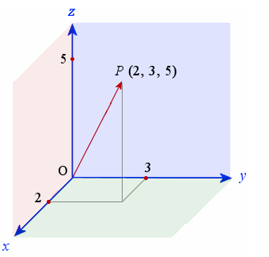
The position of any point around us can be found out by a linear combination of 3 linearly independent axes (X,Y and Z in this case).
This is because we live in a 3 dimensional space and hence the number of basis functions (orthogonal and linearly independent) to describe the complete set is 3.
So ideally we can built a dataset of millions and milllions of points in 3-D and all of them can be exactly expressed by a linear combination of these basis functions.
Lets move to biological systems:
Dimensions of biological systems: thousands to billions.
But these dimensions are not linearly independent, when it comes to dynamical motions!
Rather dynamic movements in such large systems are known to be massively correlated.
Hence, number of basis fiunction needed exactly describe the dynamics of the system is significantly less.
So if we can select our features in such a way that they are linearly independent and construct the basis functions of the space, then we can exactly describe the dynamics of the ultra-high dimensional system with less number of features. The number of features depends upon the system.
This is theoretically probable and practically impossible!
Various ways to extract features out of a dataset:
Machine learning based automated feature extraction.
Intuition/knoweldge based definition of features.
Has been the a popular appoach in MSM of biological systems as we already have a lot of information about such systems.
Ligand (un)binding: The distance between binding site residues (COM) and the ligand COM is a single feature that can qualititively describe the dynamics.
Protein (un)folding: The coordinates of C\(\alpha\) atoms and their distance distribution in configuration space can be a good indicator if the protein is unfolded or in folded state.
Variational approach to extract features.
Last few years variational approach for Markov processes (VAMP) has gained a significant attraction.
In some later class, we will learn about VAMPnets which combine the variational approach to automated feature extraction (via neural network).
The following figure is taken from the article ‘Markov State Models: From an Art to a Science’ by Husic and Pande (J. Am. Chem. Soc. 2018, 140, 2386−2396).
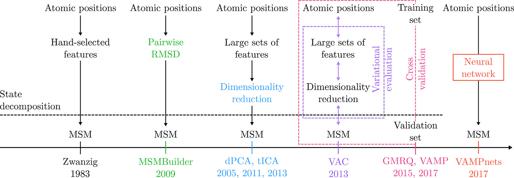
In the lab class, we will build MSM and analyze MD simulations.
References:
J. Am. Chem. Soc. 2018, 140, 7, 2386–2396. (Nice story-telling)
J. Chem. Phys. 2011, 134, 174105. (Mathematically detailed explanation)
Cur. Op. in Struc. Bio. 2014, 25, 135–144. (Good review for bio/chem background)
J. Chem. Theory Comput. 2014, 10, 1739– 1752. (Variational approach)
J. Chem. Phys. 2009, 131, 124101. (MSMBuilder software)
J. Chem. Theory Comput. 2015, 11, 11, 5525–5542. (PyEMMA software: we will be using this)